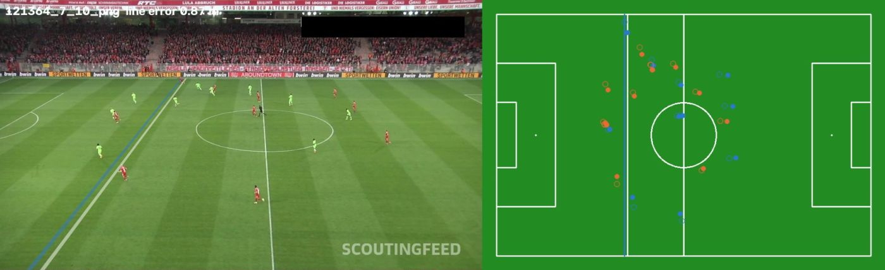

Tracks give identity, shirt colour gives teams, and a homography onto a 105 × 68 m pitch model turns pixels into metres: positions, speeds, possession and the offside line.
Phase 2 · Tracking and teams
A better detector keeps the ball in view
ByteTrack runs on each clip, and players are split into teams by clustering their shirt colour, with one vote per track across frames. Shirt colour is measured against each frame's own grass colour, after a fixed "green" mask turned out to erase lime-green kits.
Ball tracked, broadcast10 % → 25 %Frames with a live ball track, 640 vs 1280 detector, unseen 30 s Bundesliga clip
Team vote agreement97 %Frames that agree with their track's team
On a phone clip filmed from the stands, tracks fragment heavily: 261 to 448 player IDs in 17 seconds, and camera-motion compensation (BoT-SORT) removes only 5 to 14 % of them. On broadcast footage the same pipeline creates 101 to 130 IDs in 30 seconds.
Tracking and team colours with the ball's last 30 positions as a fading trail; gaps are frames where the ball was not detected. Footage: DFL, Bundesliga Data Shootout.
Add-on · Ball track gap filling
Bridging the frames the detector misses
A ball does not vanish for a few frames; the detector does. Short gaps between two confident detections are filled along the path between them, and jumps no real ball could make are dropped.
Frames with a ball, detector–Best ball detection per frame, 1280 detector
After gap filling–Gaps up to – s bridged
Held-out error– PXMedian distance between a hidden detection and its filled position, gaps of 1 to 12 frames at 1920 px
The filled positions are accurate, but coverage barely moves: most of the time the ball is missing for much longer than half a second, lost in a crowd or simply too small, and no interpolation can bridge that honestly. The error is measured by hiding real detections, which only exist on stretches where the ball was being tracked; those are the easier stretches, so treat it as a best case. It is the detector, not the tracker, that limits ball coverage.
Phases 3 and 4 · Pitch geometry
Offside is a calibration problem
A homography maps each frame onto the pitch model, anchored on penalty-area geometry that the laws fix. Under Law 11 a player is offside when in the opponents' half and nearer the goal line than both the ball and the second-last defender, so the line sits at whichever of those two is nearer the goal line. This is a visualiser, not VAR: feet are the bottom of a bounding box, and only visible players count.

White: line from a homography fitted to labelled keypoints. Blue: line from automatic calibration. On the map, filled dots are reference positions and rings are automatic ones.
Measured2.8 mMedian reprojection error of automatic calibration on the keypoint test split
Measured≈ 10 cm / pxOffside-line shift at the far touchline per pixel of click error
Measured0.39 mMedian held-out error of manual calibration from four hand-labelled box corners
By hand
Fitting on four clicked penalty-box corners leaves a median 3.7 px on the other labelled points. Each pixel of click error moves the line about 10 cm at the far touchline, so careful manual calibration still carries 35 to 40 cm of uncertainty. Offside is decided in centimetres, which is why real VAR uses calibrated multi-camera rigs.
Keypoint model
A YOLO11s pose model finds 32 pitch landmarks and fits a homography with RANSAC. Four landmarks were defined wrongly in the reference layout the dataset is usually paired with; fixing that cut their residual from about 2 m to 0.2 m. At matched batch size, 1280 beats 960 (2.9 m vs 4.0 m on validation), but the 960 model at batch 16 reaches 2.7 m and stays in use.
On video
On an unseen 30-second broadcast clip every one of 750 frames calibrates and the offside line moves a median 8.5 cm between frames. On a phone clip filmed low in the stands the median step is 2.1 m. The keypoint model works on the camera it was trained on; the demo's manual calibration covers the rest.
Phase 5 · Tactical view
The broadcast, read as a pitch
Top: possession, each team's spread and the offside line. Left: team shapes, IDs (goalkeepers magenta, referees yellow), the ball's direction and the offside band. Right: a live 2D map with speeds and distance covered. Positions are smoothed per player; calibration jumps no camera could make are rejected.
Unseen 30-second clip. Footage: DFL Deutsche Fußball Liga, Bundesliga Data Shootout (clip 121364_9).
Add-on · Space and shape
Who owns the space, and in what shape
Every point of the pitch belongs to the nearest player (a Voronoi split), which gives each team's share of the visible space. Averaging each outfield player's position over the clip and grouping by depth gives the team's visible shape.
Space share, team A–Mean over calibrated frames, visible pitch only
Space share, team B–Mean over calibrated frames, visible pitch only
Visible shape– · –Team A · team B, outfield players seen long enough to average
Where the shapes come from
Each dot is one outfield player's mean distance from the goal their team defends over the 30 seconds (the ten longest-tracked players per team). Lines are split only at gaps clearly wider than the usual spacing. The camera shows part of the pitch and calibration is about 2.8 m off, so a lone deep player can read as a line of one: a visible shape, not a formation.
Limits
What this does not show
Training has 226 images. Three-seed repeats put seed-to-seed noise at about 0.01 mAP, so only the resolution effect is clearly real; smaller effects would need more data or many more seeds.
The 1280 run used batch 8, so its gain mixes resolution with a smaller batch.
Track fragmentation is measured without identity labels, so true ID switches are not counted.
Working out which team is defending from single frames is unreliable, so offside calls on stills are not reported as decisions.
Foot position is the bottom of a box. Real offside is judged on the foremost body part with calibrated multi-camera rigs.